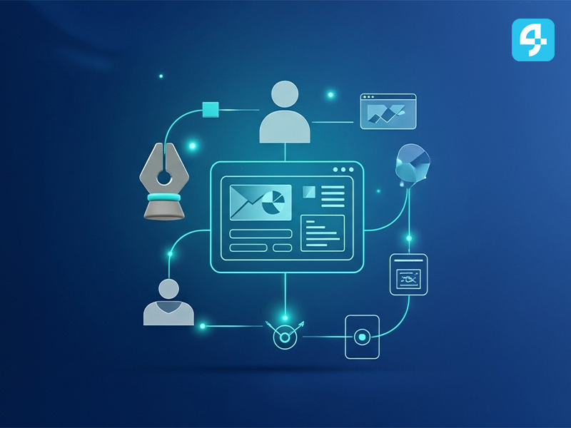

سبع ممارسات تجعل صفحة الحوكمة في موقعك مرجعًا موثوقًا
كيف تحوّل قسم الحوكمة من مجرد ملفات PDF إلى تجربة تصفّح ميسّرة تخدم الجمهور والجهات الرقابية.
اقرأ المزيد ←مقالات وأدلّة عملية حول الحوكمة الرقمية، مواقع الجمعيات، التبرعات الإلكترونية، وتنمية الموارد — تساعد فِرقكم على بناء حضور رقمي أكثر أثرًا.
كيف تحوّل قسم الحوكمة من مجرد ملفات PDF إلى تجربة تصفّح ميسّرة تخدم الجمهور والجهات الرقابية.
اقرأ المزيد ←
استعراض لأهم الأقسام التي يجب أن يضمّها أي موقع جمعية حديث، مع أمثلة من السوق السعودي.
اقرأ المزيد ←
كيف تبني الجمعية منظومة موارد رقمية متعددة (تبرعات، متجر، شراكات) تُقلّل اعتمادها على مصدر واحد.
اقرأ المزيد ←
دليل عملي لبناء صفحة حملة احترافية، مع توصيات في الكتابة، الصور، طرق الدفع، وآليات الشكر.
اقرأ المزيد ←
إطار عمل عملي يساعد فريق الجمعية على نقل عملياتها إلى منصة موحَّدة بدون تعطيل النشاط اليومي.
اقرأ المزيد ←
كيف تبني جمعيتك آلة محتوى منتظمة عبر مركز إعلامي رقمي متكامل، وما المكونات الأساسية له.
اقرأ المزيد ←
مبادئ تصميمية مدروسة تجعل موقع جمعيتك قابل الاستخدام لشرائح متنوعة من الجمهور بسهولة.
اقرأ المزيد ←
المقاييس التي يجب أن تتابعها فِرق الاتصال في الجمعيات شهريًا، وكيفية تفسيرها لاتخاذ قرارات أفضل.
اقرأ المزيد ←
أفكار لإعادة تصميم التقرير السنوي بصورة رقمية تفاعلية تصل لأكبر شريحة من الجمهور والداعمين.
اقرأ المزيد ←
أبرز العثرات التي تواجه الجمعيات أثناء تبنّي الحلول الرقمية، ودروس عملية لتفاديها قبل وقوعها.
اقرأ المزيد ←مقالات مختارة، إصدارات جديدة من المنصة، وتحديثات تشغيلية تخصّ فِرق الجمعيات — مرّة واحدة في الشهر، بدون إزعاج.